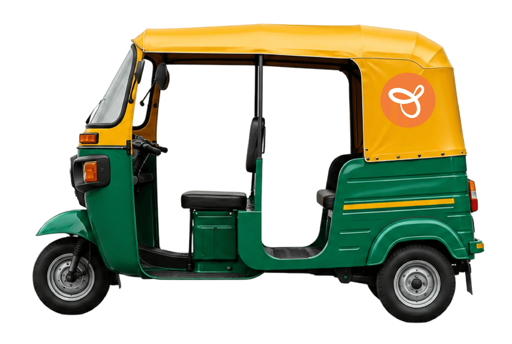
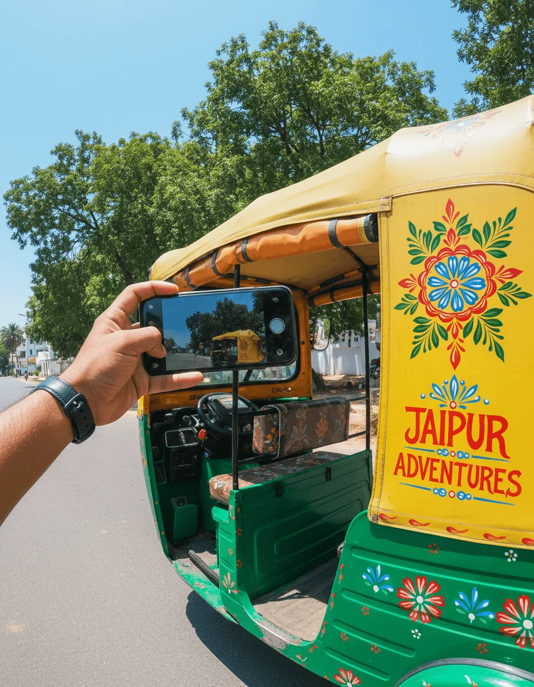
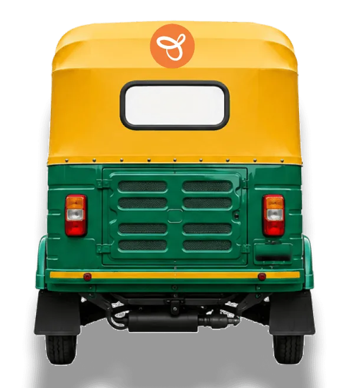

Jugnoo — Vehicle Branding
A system that verifies vehicle branding daily through AI and rewards consistency through a series of incentive structure, designed to balance business compliance needs with driver trust and retention.

The Problem
Verify auto-rickshaw branding every day without losing driver trust.
What I Did
AI video verification, a ₹10 daily payout, a ₹100 reward for every 30-day streak, and fair edge cases (2 attempts a day, 1 skip per 15 days).
Takeaway
Incentives are part of the experience — the numbers deserve as much design as the screens.
Impact
Improved driver retention and consistent branding compliance across the fleet.
Turning every rickshaw into a moving ad.
Jugnoo is a ride-hailing platform operating across India, connecting everyday commuters with rides.
As part of its marketing, Jugnoo pays Auto drivers to display Jugnoo posters on their vehicles, turning every rickshaw into a moving ad at a fraction of the cost of traditional advertising.


Our Approach
The branding verification system evolved through phases.
Each phase solved the specific gap the previous one exposed, rather than trying to design a complete solution upfront.
Design Goals
Rules were designed around realistic driver scenarios like vehicle downtime, emergencies, rejected videos so the system penalizes non-compliance, not bad luck.
Daily rewards and streak incentives were designed to work together. This keeps both short-term and long-term motivation aligned.
Verification, rewards, and activity history were kept in one clear flow. Drivers can easily understand their current status without checking multiple screens.
Just upload a photo, every day.
The most straightforward fix seemed obvious: have drivers upload a photo of their vehicle every day, so branding could be verified consistently.
Select Upload Options
Upload from CameraUpload from GalleryCancelPlease Wait !
We are Verifying Your Video
Our AI is checking your branding video. This usually takes a few seconds.
Do not close the app
Why would they?
Drivers already go through sign-in and ride-related steps every single day. Adding one more unpaid task with no clear benefit to them was just friction and friction pushes drivers away from the platform. We needed drivers to want to do this.
So we paid them.
We set up daily verification and gave drivers an actual reason to comply.
Every time a driver submitted a branding video that passed AI verification, ₹10 was credited directly to their Jugnoo Wallet. This gave drivers a reason to participate.
But one day isn't enough
Jugnoo needed drivers to maintain branding continuously, not just submit once and disengage.
Consistency Streak
A streak reward was layered on top of the daily payout: every 30 consecutive days of approved submissions unlocks an additional ₹100 credited directly to their Jugnoo Wallet. This gave drivers a reason to participate.
Branding Approved
Your vehicle branding has been approved. ₹10 has been credited to your Jugnoo wallet.
View WalletRewards
Complete 30 days consecutively to get an additional ₹100 reward.


What if a driver genuinely couldn't submit?
A vehicle could break down. A driver could take a day off for a personal emergency.
If we treated a genuine miss the same way as someone simply not bothering, drivers would stop trusting the system and stop caring about branding altogether.
A skip is allowed once every 15 days, so a genuine miss doesn't feel like a punishment.
A driver gets two attempts to submit a video. If both get rejected, they can try again the next day instead of losing the day entirely.
Branding stays active even after a missed day — a driver isn't cut off from the program. Two consecutive missed days reset the streak back to Day 1, and the driver becomes ineligible for the ₹100 they'd have earned at 30 days.
If you miss two days in a row, your streak will reset and you'll need to start over from the beginning. Skip can be used once every 15 days.


A dedicated Branding Instructions section
To keep the experience transparent and reduce confusion - key instructions and streak rules are shown clearly, so drivers always know what is expected and what happens next. It gives quick access to video guidelines and FAQs for any additional questions. This helps drivers make the right decision without leaving the flow.
Every approved submission and every streak milestone shows up as real money
Visible in the driver's wallet, explained on a dedicated rewards page, and recorded in a history they can look back on anytime.
This was more about making the system work in real situations. Each decision came from questioning what could go wrong, how a driver might respond, and what would still feel fair. The final experience was shaped by following those questions until the flow felt clear and practical.

My Learnings
The ₹10 daily reward, 30-day streak, and ₹100 bonus directly affect how drivers respond to the feature. These numbers needed as much thought as the screens themselves.
Early conversations made one thing clear: drivers needed a strong reason to participate. This helped define the reward system and overall flow.
Some rules looked fair during planning but felt frustrating during testing. This led to changes such as retrying the next day and allowing skips in specific situations.
Even if the experience is simple and fair, drivers still need to trust the system and see value in using it. Real usage will show how well the feature performs over time.